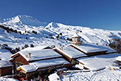

Ф.И.О.: Иванова Марина
Дата рождения: 3.02.1995 (23 года)
Образование: Высшее (БГУ)
Обо мне:Let me introduce myself. My full name is Marina Ivanova. I’m 23 years old. I was born on February 03th, 1995 in Rostov-on-Don. It is a large city in southern Russia. I grew up and studied in this city. Many young people would want to be on my place as Rostov opens up numerous career opportunities. My parents are both doctors. My mum’s name is Elena and she is a dentist. My dad’s name is Kirill and he is a cardiologist. They both have noble jobs as they help other people from day to day. When I was little we often visited my grandparents who live in a small village in Rostov region. They have a large country house with a garden behind it. My grandmother liked working in her own garden. Every year she has a rich harvest of fruit and vegetables. My grandfather is a mechanic and he likes fixing things. I have positive memories of the village they lived in because each time I came to visit I went for a walk with local kids. I’ve had many good friends there. Sometimes when my granddad went fishing he took me with him. I could never catch a fish but I liked watching him. My grandmother also spent lots of time with me. She often told me interesting stories and she taught me how to cook an apple-pie. The school where I studied was right behind our block of flats. My favourite subjects included History, Geography and Foreign languages. This year I’ve graduated from high school and now I’m going to enter a local Law school. My parents were a bit disappointed because they’ve always wanted me to get medical education. However, I’ve made up my mind to become a lawyer. I think it’s a popular and demanded profession nowadays. My dream is to succeed in my profession and to study further at the university. After graduation I want to travel a bit around Europe.
Хобби
Первое путешествие
Первый день моего путешествия! Я не верю, что наконец смог отложить все дела и отправиться в путешествие. Поскольку я собирался ехать на скутере, то не мог взять с собой много вещей: только сотовый телефон, iPod, цифровую камеру и шоколадный батончик. Только всесамое необходимое. Как сказал бы Лао-Цзы: "Путешествие на тысячу миль начинается с одного шага к скутеру" Первый день моего путешествия! Я не верю, что наконец смог отложить все дела и отправиться в путешествие. Поскольку я собирался ехать на скутере, то не мог взять с собой много вещей: только сотовый телефон, iPod, цифровую камеру и шоколадный батончик. Только всесамое необходимое. Как сказал бы Лао-Цзы: "Путешествие на тысячу миль начинается с одного шага к скутеру"
30 дней в пути
Итак, я уже проехал 1200 миль и побывал в некоторых интересных местах: Вала-Вала, штат Вашингтон, Мэджик-Сити, штат Айдахо, Баунтифул, штат Юта, Дэст Чанс, штат Колорадо, Уай, штат Аризона, Трут-ор-Консекуэнсес, штат Нью-Мексико. Я видел парочку знаков в стиле Burma Shave на обочине дороги: "Если вы не заметите проезжающие мимо машины,  то они могут сбить вас. Одно мгновение - и бесконечность..." Я определенно не хотел, чтобы на меня наехала машина! Одно мгновение - и бесконечность..." Я определенно не хотел, чтобы на меня наехала машина!Одно мгновение - и бесконечность..." Я определенно не хотел, чтобы на меня наехала машина! Одно мгновение - и бесконечность..." Я определенно не хотел, чтобы на меня наехала машина!